Alternativa con separación
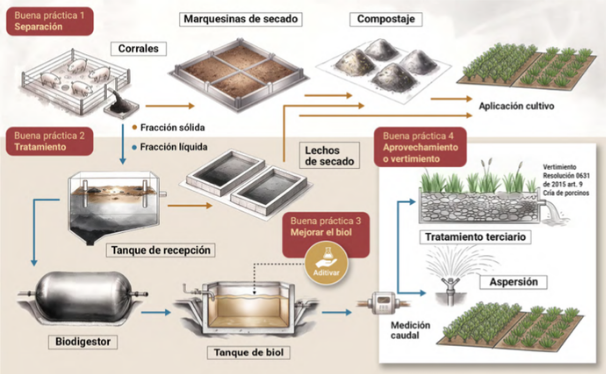
Ingresa los datos de tu granja para calcular el tamaño de cada unidad del sistema. Los valores técnicos ya vienen con los parámetros recomendados — puedes ajustarlos en "opciones avanzadas" si conoces las condiciones reales de tu finca.
Antes de dimensionar el sistema, define si separarás los sólidos de la porcinaza o si la tratarás sin separación.
La porcinaza contiene una fracción sólida y una fracción líquida. Separarlas permite manejar cada una de forma adecuada, facilita las etapas de tratamiento, reduce la carga contaminante y permite aprovechar el compost y el biol.
La alternativa con o sin separación depende de la cantidad de porcinaza generada, el espacio disponible, la disponibilidad de agua, la inversión y la capacidad de operación y mantenimiento de la granja.

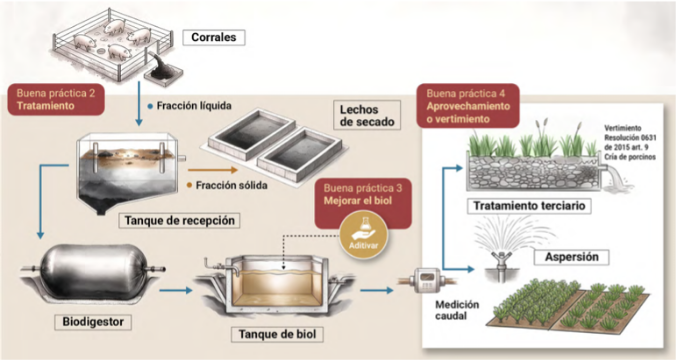
Existen diferentes formas de separar los sólidos de la porcinaza. A continuación se presentan algunas alternativas.
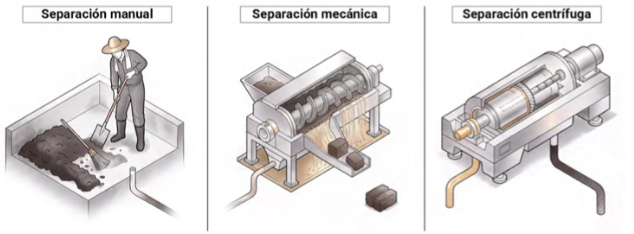
Ingresa el número de animales por grupo. Con esta información se calcula el número de cerdos equivalentes (CE), que es la unidad base para el dimensionamiento del sistema de tratamiento.
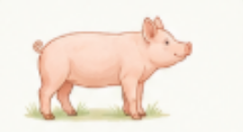
Hembras que no están gestantes ni lactantes.
Hembras en periodo de gestación.
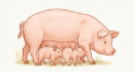
Hembras que se encuentran amamantando.
Machos destinados a la reproducción.
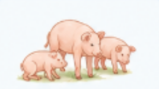
Lechones que aún se encuentran con la madre.
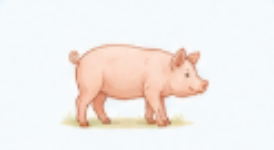
Animales después del destete, antes de la etapa de levante.
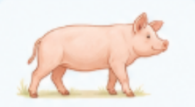
Animales en etapa de crecimiento.
Animales destinados a la etapa final de engorde.
El caudal de diseño corresponde al volumen de porcinaza que llegará a las unidades de tratamiento cada día. Se calcula a partir de la población porcina, el escenario seleccionado y el agua utilizada en las actividades de lavado.
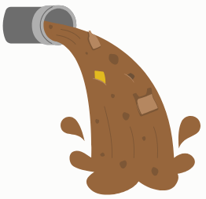
Cuando se realiza la separación sólido-líquido, una parte de los sólidos se retira antes del tratamiento de la fracción líquida. Por esto, el caudal que continúa hacia las unidades de tratamiento es menor que en el escenario sin separación.
| Caudales calculados | Resultado |
|---|
Los sólidos retirados no hacen parte del caudal de diseño del tratamiento líquido. Este flujo se utilizará posteriormente para dimensionar las unidades de manejo de sólidos (lechos de secado, marquesina y compostaje).
Primera unidad del sistema: recibe la fracción líquida, amortigua el caudal y permite la sedimentación de los sólidos más pesados.
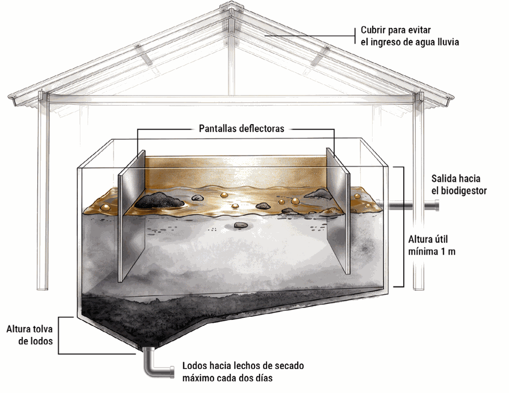
Unidad destinada a reducir la humedad de los sólidos y lodos generados durante el tratamiento, facilitando su manejo y aprovechamiento posterior.
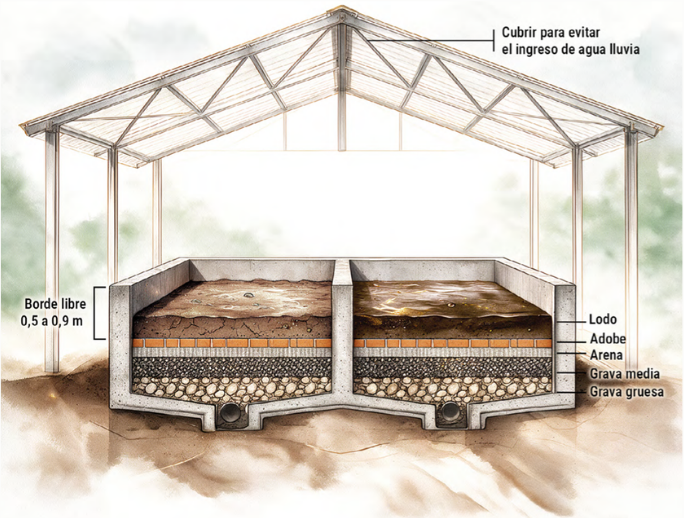
Recuerda contar con dos o más lechos para que se permita alternar su uso y facilitar las labores de retiro del material seco, limpieza y mantenimiento.
Deshidrata la fracción sólida separada mecánicamente antes del tanque de recepción. Solo aplica si elegiste el escenario con separación (CS).
Recibe el lodo deshidratado de los lechos (y de la marquesina, si aplica) y lo mezcla con material rico en carbono.
Unidad destinada a la estabilización anaerobia de la materia orgánica presente en la porcinaza. Durante el proceso se produce biogás y se obtiene biol como efluente.
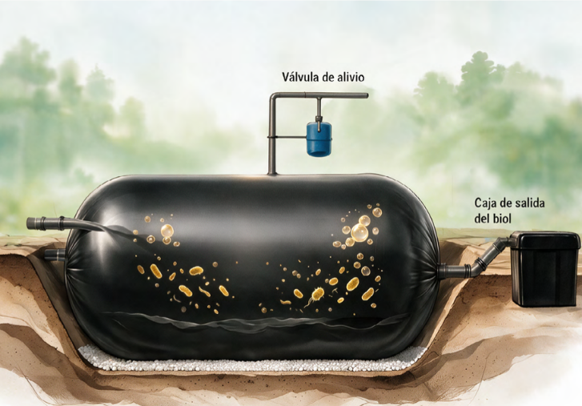
Unidad destinada al almacenamiento temporal del biol obtenido después del proceso de biodigestión. Esta unidad se dimensiona únicamente cuando el biol será destinado a aprovechamiento.
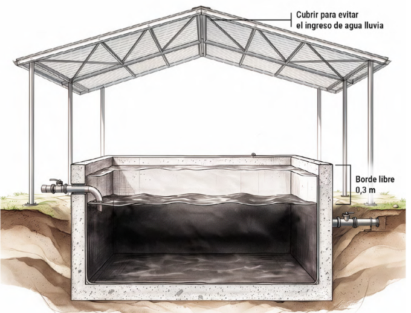
El biol puede aprovecharse como biofertilizante en cultivos, o requerir un tratamiento terciario antes de verterse a una fuente de agua.
Desliza hacia los lados para ver el plano completo.
Las medidas de las pantallas deflectoras (0,6–0,9 m y 0,45–0,60 m), el borde libre con natas (0,4 m) y la pendiente de la tolva (45° a 65°) son recomendaciones constructivas.
Desliza hacia los lados para ver el plano completo.
La pendiente longitudinal (0,5–1 %), las zanjas a 45° para las tuberías y la columna de agua de la válvula de alivio son recomendaciones constructivas.
Desliza hacia los lados para ver el plano completo.
Se recomienda cubrir el tanque para evitar el ingreso de agua lluvia e impermeabilizar sus paredes y fondo.
Desliza hacia los lados para ver el plano completo.
Los espesores de cada capa del medio filtrante (arena y gravas), el tamaño de los adobes y su separación, la tubería de desagüe de 100 mm y la pendiente del 1 % son recomendaciones constructivas.